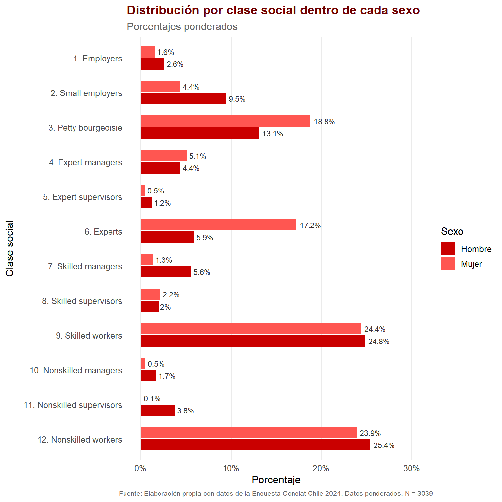
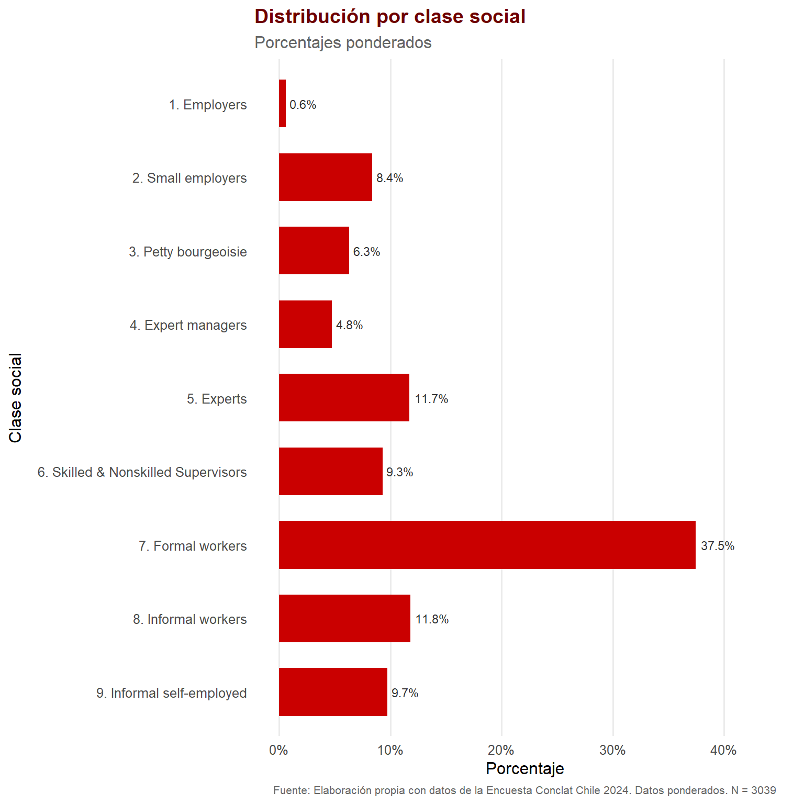
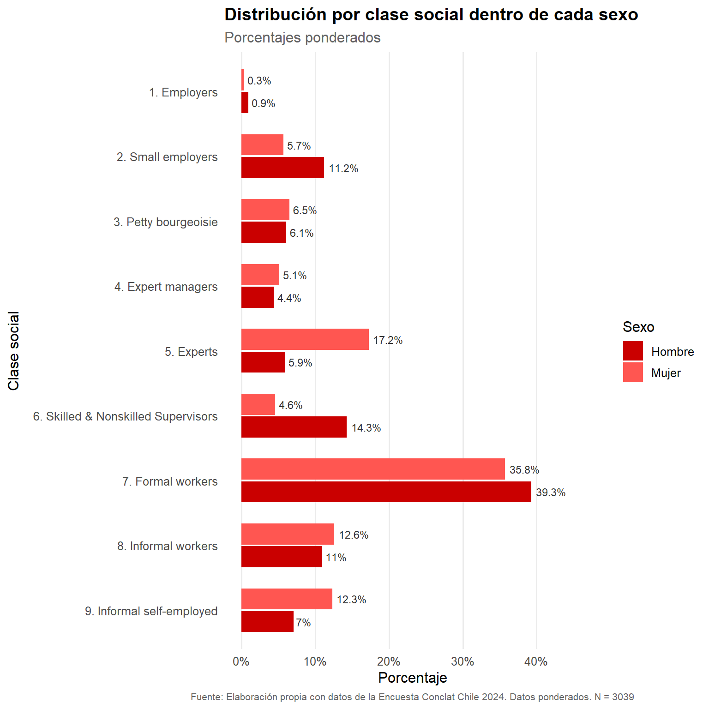

data <- readRDS("output/data/data-marxismo-clases-cl.rds")
# base survey
data_svy <- as_survey_design(data, weights = rake_wb2)4 Gráficos de Clases Chile
Capítulo para armar gráficos de los esquemas de Clases. Datos actualizados para el 26/03/2026.
4.1 Preparación
4.1.1 Cargar datos
4.2 Gráficos
4.2.1 wrightclass_v1 x sexo
frq(data$wrightclass_v1_original)Wright Class Typology (v1 original) (x) <categorical>
# total N=3048 valid N=3039 mean=7.31 sd=3.84
Value | N | Raw % | Valid % | Cum. %
-----------------------------------------------------------
1. Employers | 107 | 3.51 | 3.52 | 3.52
2. Small employers | 276 | 9.06 | 9.08 | 12.60
3. Petty bourgeoisie | 551 | 18.08 | 18.13 | 30.73
4. Expert managers | 95 | 3.12 | 3.13 | 33.86
5. Expert supervisors | 39 | 1.28 | 1.28 | 35.14
6. Experts | 239 | 7.84 | 7.86 | 43.01
7. Skilled managers | 94 | 3.08 | 3.09 | 46.10
8. Skilled supervisors | 78 | 2.56 | 2.57 | 48.67
9. Skilled workers | 671 | 22.01 | 22.08 | 70.75
10. Nonskilled managers | 25 | 0.82 | 0.82 | 71.57
11. Nonskilled supervisors | 39 | 1.28 | 1.28 | 72.85
12. Nonskilled workers | 825 | 27.07 | 27.15 | 100.00
<NA> | 9 | 0.30 | <NA> | <NA>data <- data %>%
mutate(
sexo = factor(
case_when(
e01 == 1 ~ "Hombre",
e01 == 2 ~ "Mujer"
)
)
) %>%
set_variable_labels(sexo = "Sexo")
# base survey
data_svy <- as_survey_design(data, weights = rake_wb2)# Calcular porcentajes ponderados por sexo
class_pct_sex <- data_svy %>%
filter(!is.na(wrightclass_v1_original), !is.na(sexo)) %>%
group_by(sexo, wrightclass_v1_original) %>%
summarise(pct = survey_mean(na.rm = TRUE) * 100, .groups = "drop")Warning: There was 1 warning in `dplyr::summarise()`.
ℹ In argument: `pct = survey_mean(na.rm = TRUE) * 100`.
ℹ In group 1: `sexo = Hombre` `wrightclass_v1_original = 1. Employers`.
Caused by warning:
! na.rm argument has no effect on survey_mean when calculating grouped proportions.
This warning is displayed once per session.# Calcular N válido (sin NA en ninguna de las dos variables)
n_valido <- data %>%
filter(!is.na(wrightclass_v1_original), !is.na(sexo)) %>%
nrow()
# Gráfico horizontal agrupado
grafico <- ggplot(class_pct_sex, aes(x = fct_rev(wrightclass_v1_original), y = pct, fill = sexo)) +
geom_col(position = position_dodge(width = 0.7), width = 0.65) +
geom_text(
aes(label = paste0(round(pct, 1), "%")),
position = position_dodge(width = 0.7),
hjust = -0.15,
size = 3.0,
color = "gray20"
) +
scale_fill_manual(values = c("Hombre" = "#ca0000", "Mujer" = "#ff5651")) +
scale_y_continuous(
limits = c(0, max(class_pct_sex$pct) * 1.18),
labels = scales::label_percent(scale = 1)
) +
coord_flip() +
labs(
title = "Distribución por clase social dentro de cada sexo",
subtitle = "Porcentajes ponderados",
x = "Clase social",
y = "Porcentaje",
fill = "Sexo",
caption = paste0("Fuente: Elaboración propia con datos de la Encuesta Conclat Chile 2024. Datos ponderados. N = ", n_valido)
) +
theme_minimal(base_size = 12) +
theme(
panel.grid.major.y = element_blank(),
panel.grid.minor = element_blank(),
plot.title = element_text(face = "bold", color = "#6f0000"),
plot.subtitle = element_text(color = "grey40"),
plot.caption = element_text(size = 8, color = "gray40", hjust = 0.5),
legend.position = "right",
axis.title.y = element_text(margin = margin(r = 10))
)
grafico
ggsave("output/graph-clases/wrightclass_v1_sexo.png", plot = grafico, width = 8, height = 8, dpi = 300)4.2.2 wrightclass_v15_emp_reduced
# Calcular porcentajes ponderados
class_pct <- data_svy %>%
filter(!is.na(wrightclass_v15_emp_reduced)) %>%
group_by(wrightclass_v15_emp_reduced) %>%
summarise(pct = survey_mean(na.rm = TRUE) * 100, .groups = "drop")
# Calcular N válido
n_valido <- data %>%
filter(!is.na(wrightclass_v15_emp_reduced)) %>%
nrow()
# Gráfico horizontal
grafico <- ggplot(class_pct, aes(x = fct_rev(wrightclass_v15_emp_reduced), y = pct)) +
geom_col(fill = "#ca0000", width = 0.65) +
geom_text(
aes(label = paste0(round(pct, 1), "%")),
hjust = -0.15,
size = 3.0,
color = "gray20"
) +
scale_y_continuous(
limits = c(0, max(class_pct$pct) * 1.18),
labels = scales::label_percent(scale = 1)
) +
coord_flip() +
labs(
title = "Distribución por clase social",
subtitle = "Porcentajes ponderados",
x = "Clase social",
y = "Porcentaje",
caption = paste0("Fuente: Elaboración propia con datos de la Encuesta Conclat Chile 2024. Datos ponderados. N = ", n_valido)
) +
theme_minimal(base_size = 12) +
theme(
panel.grid.major.y = element_blank(),
panel.grid.minor = element_blank(),
plot.title = element_text(face = "bold", color = "#6f0000"),
plot.subtitle = element_text(color = "grey40"),
plot.caption = element_text(size = 8, color = "gray40", hjust = 0.5),
axis.title.y = element_text(margin = margin(r = 10))
)
grafico
ggsave("output/graph-clases/wrightclass_v15.png", plot = grafico, width = 8, height = 8, dpi = 300)4.2.3 wrightclass_v15_emp_reduced x sexo
# Calcular porcentajes ponderados por sexo
class_pct_sex <- data_svy %>%
filter(!is.na(wrightclass_v15_emp_reduced), !is.na(sexo)) %>%
group_by(sexo, wrightclass_v15_emp_reduced) %>%
summarise(pct = survey_mean(na.rm = TRUE) * 100, .groups = "drop")
# Calcular N válido (sin NA en ninguna de las dos variables)
n_valido <- data %>%
filter(!is.na(wrightclass_v15_emp_reduced), !is.na(sexo)) %>%
nrow()
# Gráfico horizontal agrupado
grafico <- ggplot(class_pct_sex, aes(x = fct_rev(wrightclass_v15_emp_reduced), y = pct, fill = sexo)) +
geom_col(position = position_dodge(width = 0.7), width = 0.65) +
geom_text(
aes(label = paste0(round(pct, 1), "%")),
position = position_dodge(width = 0.7),
hjust = -0.15,
size = 3.0,
color = "gray20"
) +
scale_fill_manual(values = c("Hombre" = "#ca0000", "Mujer" = "#ff5651")) +
scale_y_continuous(
limits = c(0, max(class_pct_sex$pct) * 1.18),
labels = scales::label_percent(scale = 1)
) +
coord_flip() +
labs(
title = "Distribución por clase social dentro de cada sexo",
subtitle = "Porcentajes ponderados",
x = "Clase social",
y = "Porcentaje",
fill = "Sexo",
caption = paste0("Fuente: Elaboración propia con datos de la Encuesta Conclat Chile 2024. Datos ponderados. N = ", n_valido)
) +
theme_minimal(base_size = 12) +
theme(
panel.grid.major.y = element_blank(),
panel.grid.minor = element_blank(),
plot.title = element_text(face = "bold"),
plot.subtitle = element_text(color = "grey40"),
plot.caption = element_text(size = 8, color = "gray40", hjust = 0.5),
legend.position = "right",
axis.title.y = element_text(margin = margin(r = 10))
)
grafico
ggsave("output/graph-clases/wrightclass_v15_sexo.png", plot = grafico, width = 8, height = 8, dpi = 300)